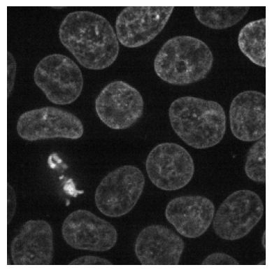
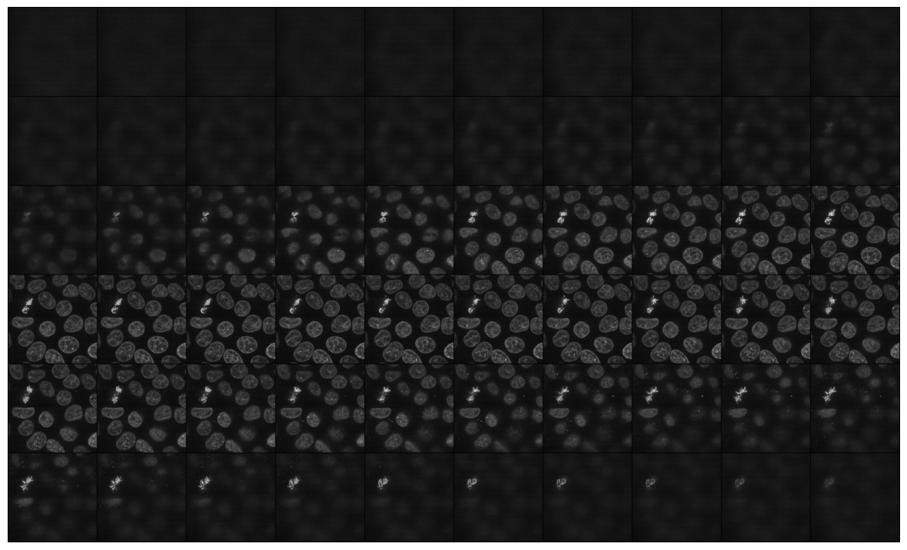
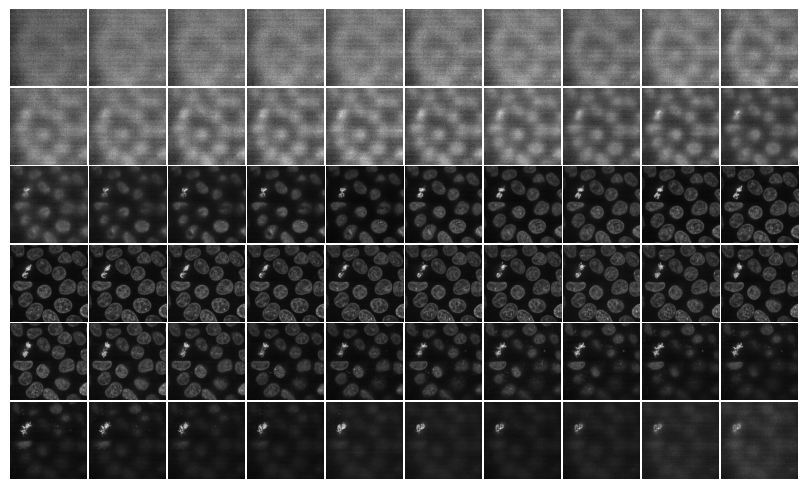
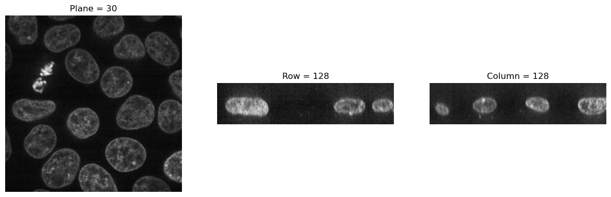
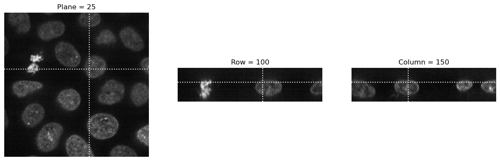
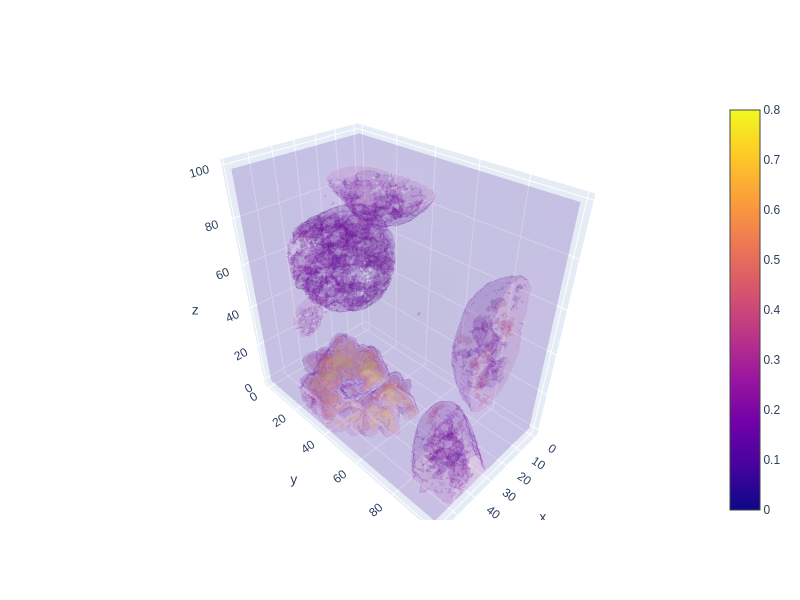

# load sample data
data4D = img2float(cells3d())
data = data4D[:, 1, :, :] # load the nuclei channelVisualize
Data visualization
Display 2D images
Function to quickly display 2D images
plot_image
plot_image (values)
Plot a 2D image using Matplotlib. The function assumes that ‘values’ is a 2D array representing an image, typically in grayscale.
Parameters: values (numpy.ndarray): A 2D array of pixel values representing the image.
Returns: None
# Example usage:
plot_image(data[35])
Display 3D images
Function to display 3D images
mosaic_image_3d
mosaic_image_3d (t:(<class'numpy.ndarray'>,<class'torch.Tensor'>), axis:int=0, figsize:tuple=(15, 15), cmap:str='gray', nrow:int=10, alpha=1.0, return_grid=False, add_to_existing=False, **kwargs)
Plots 2D slices of a 3D image alongside a prior specified axis. Args: t: a 3D numpy.ndarray or torch.Tensor axis: axis to split 3D array to 2D images figsize, cmap: passed to plt.imshow nrow: passed to torchvision.utils.make_grid return_grid: Whether the grid should be returned for further processing or if the plot should be displayed. add_to_existing: if set to true, no new figure will be created. Used for mask overlays
show_images_grid
show_images_grid (images, ax=None, ncols=10, figsize=None, title=None, spacing=0.02, max_slices=3, ctx=None, cmap=None, norm=None, aspect=None, interpolation=None, alpha=None, vmin=None, vmax=None, origin=None, extent=None, interpolation_stage=None, filternorm=True, filterrad=4.0, resample=None, url=None, data=None, **kwargs)
Show a list of images arranged in a grid.
Parameters: - images: list of images to display. - ncols (int): number of columns in the grid. - figsize (tuple, optional): figure size in inches. - titles (list, optional): list of titles corresponding to each image. - spacing (float, optional): spacing between subplots. - ctx: additional context passed to the plt.Axes.imshow function. - **kwargs: additional keyword arguments passed to plt.Axes.imshow.
Returns: - axes: matplotlib axes containing the grid of images.
mosaic_image_3d(torch_from_numpy(data), figsize=None)
show_images_grid(data, cmap='gray');
Show slices
show_plane
show_plane (ax, plane, cmap='gray', title=None, lines=None, linestyle='--', linecolor='white')
Display a slice of the image tensor on a given axis with optional dashed lines.
Parameters: ax (matplotlib.axes._subplots.AxesSubplot): The axis object to display the slice on. plane (numpy.ndarray): A 2D numpy array representing the slice of the image tensor. cmap (str, optional): Colormap to use for displaying the image. Defaults to “gray”. title (str, optional): Title for the plot. Defaults to None. dashed_lines (list, optional): A list of indices where dashed lines should be drawn on the plane.
visualize_slices
visualize_slices (data, planes=None, showlines=True, **kwargs)
Visualize slices of a 3D image tensor along its planes, rows, and columns.
Parameters: data (numpy.ndarray): A 3D numpy array representing the image tensor. planes (tuple): A tuple containing the indices of the planes to visualize. If None, defaults to middle slices.
visualize_slices(data, showlines=False)
visualize_slices(data, (25,100,150), linestyle=':')
slice_explorer
slice_explorer (data, **kwargs)
Visualizes the provided data using Plotly’s interactive imshow function with animation support.
Args: data (np.array or pd.DataFrame): The data to be visualized, typically a 2D array representing an image sequence.
Returns: None: Displays the plot directly.
slice_explorer(data, title='Nuclei')Unable to display output for mime type(s): application/vnd.plotly.v1+jsonslice_explorer(data4D)Unable to display output for mime type(s): application/vnd.plotly.v1+jsonplot_volume
plot_volume (values, opacity=0.1, min=0.1, max=0.8, surface_count=5, width=800, height=600)
Plot a 3D volume using Plotly. The function assumes that ‘values’ is a 3D array representing the volume data.
Parameters: values (numpy.ndarray): A 3D array of pixel values representing the volume. opacity (float, optional): Opacity level for the surfaces in the volume plot. Defaults to 0.1. min (float, optional): Minimum threshold multiplier for the visualization. Defaults to 0.1. max (float, optional): Maximum threshold multiplier for the visualization. Defaults to 0.8. surface_count (int, optional): Number of surfaces to display in the volume plot. Defaults to 5. width (int, optional): Width of the plotted figure. Defaults to 800. height (int, optional): Height of the plotted figure. Defaults to 600.
Returns: None
plot_volume(data[:, 50:150, 50:150])Unable to display output for mime type(s): application/vnd.plotly.v1+json